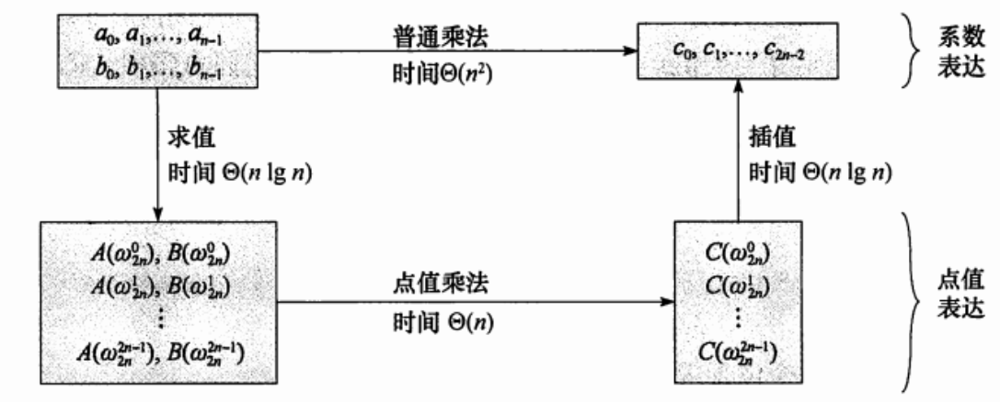
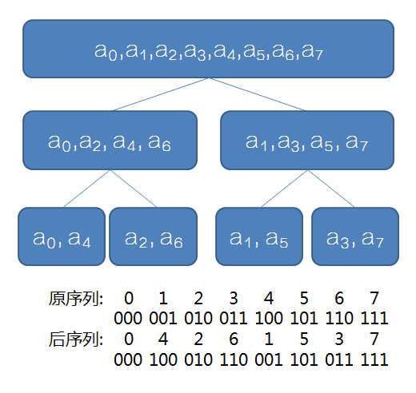

FFT
Copyright
本页面贡献者：LyuLumos。
本页面内容遵循 MIT 协议，转载请附上原文出处链接和本声明。
概述
中文名：快速(离散)傅里叶变换
作用 : 以 O(nlogn) 的复杂度计算多项式乘法
前置知识
多项式的系数表达和点值表达
系数表达：F(x)=∑_{i=0}^{n}a_i x^i，如 F(x)=x^2+x+1
点值表达：X={x_0,x_1,...x_n} 代入多项式 F(x) ，得到的 n+1个点分别为 (x_0,y_0)(x_1,y_1)...(x_n,y_n)
定理
在平面直角坐标系中，(n+1)个点值对就能确定一个n次多项式的全部系数。
比如，只要知道两个点的坐标就可以通过待定系数法确定之前的方程。
当次数比较高的时候，可以通过拉格朗日插值法进行确定。
也就是说我们计算两个 n 次多项式相乘只要取 2n+1个点进行分别计算就行了。
但是，如果随便取这些点，复杂度仍为 O(n^2)。
单位根
在复平面上，以原点为圆心，1为半径作圆，所得的圆叫单位圆。以圆点为起点，圆的n等分点为终点，做n个向量，设幅角为正且最小的向量对应的复数为ω_n，称为n次单位根。
在代数中，若z^n=1，我们把z称为n次单位根。
性质
设n为2的整数次幂
-
\omega_{2n}^{2k} = \omega_{n}^{k} (对应的向量相同)
-
\omega_{n}^{k + \frac{n}{2}} = -\omega_{n}^{k} （对应的向量等大反向）
借助图可以更好的理解。
快速傅里叶变换
时间复杂度 O(nlog_2n)
理论
设函数
FL(x)=f_0+f_2x+...+f_{n-2}x^{n/2-1}
FR(x)=f_1+f_3x+...+f_{n-1}x^{n/2-1}
则有
代入ω^k_n、ω_n^{k+n/2}，经计算化简
F(ω^k_n)=FL(ω^k_{n/2})+ω^k_nFR(ω^k_{n/2})
F(ω_n^{k+n/2})=FL(ω_{n/2}^k)−ω_n^kFR(ω_{n/2}^k)
如果我们知道两个多项式 FL(x) 和 FR(x)分别在ω^0_{n/2},ω^1_{n/2},ω^2_{n/2},...,ω^{n/2-1}_{n/2}的点值表示，就可以O(n)求出 F(x) 在 ω^0_{n},ω^1_{n},ω^2_{n},...,ω^{n-1}_{n}处的点值表示。
用分治法求下去。
把DFT中的 ω^1_n 换成 ω^{-1}_n，做完之后除以 n 即可实现IDFT。DFT/IDFT核心代码可以复用。
1
2
3
4
5
6
7
8
9
10
11
12
13
14
15
16 | void fft(CP *f, bool flag) { // flag=-1为IDFT
for (int p = 2; p <= n; p <<= 1) {
int len = p >> 1;
CP tG(cos(2 * Pi / p), sin(2 * Pi / p));
if (!flag) tG.y *= -1;
for (int k = 0; k < n; k += p) {
CP buf(1, 0);
for (int l = k; l < k + len; l++) {
CP tt = buf * f[len + l];
f[len + l] = f[l] - tt; // (1)
f[l] = f[l] + tt; // (2)
buf = buf * tG; //得到下一个[反]单位根
}
}
}
}
|
关于IFFT的证明有很多，相对来说也比较复杂，这里给出一种数学上的理解。
\left(\begin{array}{ccccc} x_{0}^{0} & x_{0}^{1} & x_{0}^{2} & \ldots & x_{0}^{n-1} \\ x_{1}^{0} & x_{1}^{1} & x_{1}^{2} & \ldots & x_{1}^{n-1} \\ \ldots & \ldots & \ldots & \ldots & \ldots \\ \ldots & \ldots & \ldots & \ldots & \ldots \\ x_{n-1}^{0} & x_{n-1}^{1} & x_{n-1}^{2} & \ldots & x_{n-1}^{n-1} \end{array}\right)\left(\begin{array}{c} a_{0} \\ a_{1} \\ \ldots \\ a_{n-1} \end{array}\right)=\left(\begin{array}{c} y_{0} \\ y_{1} \\ \ldots \\ \ldots \\ y_{n-1} \end{array}\right) \\
我们把上述矩阵抽象成 WA=B。
则 A=W^{-1}B
那么其实我们要做的就是范德蒙德矩阵求逆。
W=\left(\begin{array}{ccccc} (w_n^{0})^{0} & (w_n^{0})^{1} & (w_n^{0})^{2} & \ldots & (w_n^{0})^{n-1} \\ (w_n^{1})^{0} & (w_n^{1})^{1} & (w_n^{1})^{2} & \ldots & (w_n^{1})^{n-1} \\ \ldots & \ldots & \ldots & \ldots & \ldots \\ \ldots & \ldots & \ldots & \ldots & \ldots \\ (w_n^{n-1})^{0} & (w_n^{n-1})^{1} & (w_n^{n-1})^{2} & \ldots & (w_n^{n-1})^{n-1} \\ \end{array}\right)= \left(\begin{array}{ccccc} 1 & 1 & 1 & \ldots & 1 \\ 1 & w_n^{1\times 1} & w_n^{1\times 2} & \ldots & w_n^{1\times (n-1)} \\ \ldots & \ldots & \ldots & \ldots & \ldots \\ \ldots & \ldots & \ldots & \ldots & \ldots \\ 1 & w_n^{(n-1)\times 1} & w_n^{(n-1)\times 2} & \ldots & w_n^{(n-1)\times (n-1)} \\ \end{array}\right) \\
W^{-1}=\frac{1}{n}\left(\begin{array}{ccccc} 1 & 1 & 1 & \ldots & 1 \\ 1 & w_n^{-1\times 1} & w_n^{-1\times 2} & \ldots & w_n^{-1\times (n-1)} \\ \ldots & \ldots & \ldots & \ldots & \ldots \\ \ldots & \ldots & \ldots & \ldots & \ldots \\ 1 & w_n^{-(n-1)\times 1} & w_n^{-(n-1)\times 2} & \ldots & w_n^{-(n-1)\times (n-1)} \\ \end{array}\right) \\
观察发现，只需要变换指数的正负，再乘 \frac{1}{n}，IFFT和FFT的流程就完全一致了。
点值表示和系数表示之间的转换

优化：蝴蝶变换
要求的序列实际是原序列下标的二进制反转。

优化：三次变两次
根据 (a+bi)(c+di)==ac−bd+adi+bci
要求 F(x)G(x)，设复多项式 P(x)=F(x)+G(x)i,
则 P(x)^2==F(x)^2-G(x)^2+2F(x)G(x)i
发现P(x)^2的虚部为 2F(x)G(x)
也就是说求出 P(x)^2之后,把它的虚部除以2即可。
1
2
3
4
5
6
7
8
9
10
11
12
13
14
15
16
17
18
19
20
21
22
23
24
25
26
27
28
29
30
31
32
33
34
35
36
37
38
39
40
41
42
43
44
45
46
47
48
49
50
51
52
53 | #include <algorithm>
#include <cmath>
#include <cstdio>
#define Maxn 1350000
using namespace std;
const double Pi = acos(-1);
inline int read() {
register char ch = 0;
while (ch < 48 || ch > 57) ch = getchar();
return ch - '0';
}
int n, m;
struct CP {
CP(double xx = 0, double yy = 0) { x = xx, y = yy; }
double x, y;
CP operator+(CP const &B) const { return CP(x + B.x, y + B.y); }
CP operator-(CP const &B) const { return CP(x - B.x, y - B.y); }
CP operator*(CP const &B) const {
return CP(x * B.x - y * B.y, x * B.y + y * B.x);
}
} f[Maxn << 1]; //只用了一个复数数组
int tr[Maxn << 1];
void fft(CP *f, bool flag) {
for (int i = 0; i < n; i++)
if (i < tr[i]) swap(f[i], f[tr[i]]);
for (int p = 2; p <= n; p <<= 1) {
int len = p >> 1;
CP tG(cos(2 * Pi / p), sin(2 * Pi / p));
if (!flag) tG.y *= -1;
for (int k = 0; k < n; k += p) {
CP buf(1, 0);
for (int l = k; l < k + len; l++) {
CP tt = buf * f[len + l];
f[len + l] = f[l] - tt;
f[l] = f[l] + tt;
buf = buf * tG;
}
}
}
}
int main() {
scanf("%d%d", &n, &m);
for (int i = 0; i <= n; i++) f[i].x = read();
for (int i = 0; i <= m; i++) f[i].y = read();
for (m += n, n = 1; n <= m; n <<= 1);
for (int i = 0; i < n; i++)
tr[i] = (tr[i >> 1] >> 1) | ((i & 1) ? n >> 1 : 0);
fft(f, 1);
for (int i = 0; i < n; ++i) f[i] = f[i] * f[i];
fft(f, 0);
for (int i = 0; i <= m; ++i) printf("%d ", (int)(f[i].y / n / 2 + 0.49));
return 0;
}
|
其他
尽管FFT优于朴素算法，但是由于常数过大（复数背后是浮点数运算），同时还有精度的限制，所以数论中仍有其他的算法如NTT（快速数论变换），供大家后续学习。
例题
洛谷P3803 多项式乘法
参考资料
FFT学习笔记
快速傅里叶变换详解